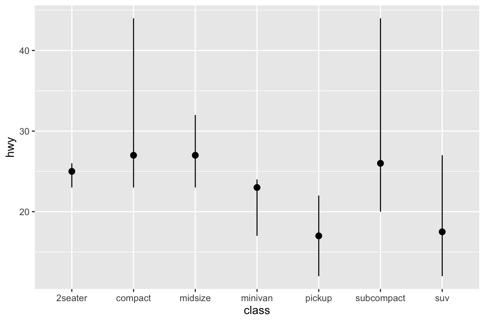

1.2 Data
Statistics is based on data and it’s analysis which has a rich and wide literature.
1.2.1 Types of Data
We generally deal with 3 kinds of data in statistics:
- Discrete Numeric Data
- Categorical Data
- Continuous Numeric Data
This paper gives a broad classification of data from measurements into 9 categories.
1.2.2 Discrete Numeric Data
Sometimes we see that many data are described in terms of numbers and many variables naturally take only discrete values. Such data can be visualized with Boxplot and Histograms.
Some imporatnt and key features of Discrete Numeric Data are Centre, Spread and the Spread.
Center Widely used measure of centre is the
meanor the average of the data set. Other measures include themedianand themode. They tell us where the data is centered around. For example, if we have a dataset of 10 numbers (Say, 1, 90, 48, 7, 7, 8, 9, 2, 3, 4) and order them by lowest to highest (i.e., 1, 2, 3, 4, 7, 7, 8, 9, 48, 90) and if we change the largest one by a larger number and smallest one by a smaller number the mean, median, mode may not change but if we change only the smallest one, then the mean will change but median and mode will not.Spread Understanding variabiity of the given data is very important. If one were to understand mean as specifying the center then the range of the data set around it is determined by its variability or spread. It is often measured by the variance(
var) or standard deviation(sd) or the inter-quartile range(IQR). For example, Suppose, we have a dataset of Statistics exam score where everyone does well and get scores 98, 99, 100 then the spread of the data is low. But in the same exam if some students get 0, 4, 10 and some students get 90, 92 then the spread is high.Shape To understand various distributional aspects of the dataset one needs to understand its shape. For example, if it is symmetric or skewed round it’s mean. Other aspects include among the data points which are more likely than others. For example, Suppose, we take the probability mass function of \(Bin(10, \frac{1}{2})\)

Then we know it’s shape is symmetric about \(x = \frac{1}{2}\). But if we take the density of \(Poi(4)\).

We will notice that it is not symmetric. The shape of the distribution is governed by the nature of it’s graph around the mean, wheather it is skewed left or right.
1.2.3 Playing with Datasets in R
R has a lot inbuilt Datasets that one can use. The command
will list currently installed data sets.
Many datasets in R are often stored as data frame (data.frame). A data frame is a rectangular collection of variables (in the columns) and observations (in the rows). Let us learn about a real dataset airquality stored as data frame. Use help to know about it.
You can print entire data set on the screen by calling it
but it prints entire dataset which may be large most of the times! Let us try the head() function
head(airquality)
#> Ozone Solar.R Wind Temp Month Day
#> 1 41 190 7.4 67 5 1
#> 2 36 118 8.0 72 5 2
#> 3 12 149 12.6 74 5 3
#> 4 18 313 11.5 62 5 4
#> 5 NA NA 14.3 56 5 5
#> 6 28 NA 14.9 66 5 6This provides the first six rows. Now try the tail() function
tail(airquality)
#> Ozone Solar.R Wind Temp Month Day
#> 148 14 20 16.6 63 9 25
#> 149 30 193 6.9 70 9 26
#> 150 NA 145 13.2 77 9 27
#> 151 14 191 14.3 75 9 28
#> 152 18 131 8.0 76 9 29
#> 153 20 223 11.5 68 9 30This provides the last six rows. But sometimes we may want to print more or less rows. head() and tail() both functions has a parameter n with which we can print our desired number of rows.
head(airquality, n = 10)
#> Ozone Solar.R Wind Temp Month Day
#> 1 41 190 7.4 67 5 1
#> 2 36 118 8.0 72 5 2
#> 3 12 149 12.6 74 5 3
#> 4 18 313 11.5 62 5 4
#> 5 NA NA 14.3 56 5 5
#> 6 28 NA 14.9 66 5 6
#> 7 23 299 8.6 65 5 7
#> 8 19 99 13.8 59 5 8
#> 9 8 19 20.1 61 5 9
#> 10 NA 194 8.6 69 5 10A specific datapoint of a data frame can be called using row and column number
The same can be printed by using the variable name for the given column and call it by it’s position.
An entire row can be printed like this.
We can pass vector of Provides Ozone and Temp columns
airquality[, c(1, 4)]
#> Ozone Temp
#> 1 41 67
#> 2 36 72
#> 3 12 74
#> 4 18 62
#> 5 NA 56
#> 6 28 66
#> 7 23 65
#> 8 19 59
#> 9 8 61
#> 10 NA 69
#> 11 7 74
#> 12 16 69
#> 13 11 66
#> 14 14 68
#> 15 18 58
#> 16 14 64
#> 17 34 66
#> 18 6 57
#> 19 30 68
#> 20 11 62
#> 21 1 59
#> 22 11 73
#> 23 4 61
#> 24 32 61
#> 25 NA 57
#> 26 NA 58
#> 27 NA 57
#> 28 23 67
#> 29 45 81
#> 30 115 79
#> 31 37 76
#> 32 NA 78
#> 33 NA 74
#> 34 NA 67
#> 35 NA 84
#> 36 NA 85
#> 37 NA 79
#> 38 29 82
#> 39 NA 87
#> 40 71 90
#> 41 39 87
#> 42 NA 93
#> 43 NA 92
#> 44 23 82
#> 45 NA 80
#> 46 NA 79
#> 47 21 77
#> 48 37 72
#> 49 20 65
#> 50 12 73
#> 51 13 76
#> 52 NA 77
#> 53 NA 76
#> 54 NA 76
#> 55 NA 76
#> 56 NA 75
#> 57 NA 78
#> 58 NA 73
#> 59 NA 80
#> 60 NA 77
#> 61 NA 83
#> 62 135 84
#> 63 49 85
#> 64 32 81
#> 65 NA 84
#> 66 64 83
#> 67 40 83
#> 68 77 88
#> 69 97 92
#> 70 97 92
#> 71 85 89
#> 72 NA 82
#> 73 10 73
#> 74 27 81
#> 75 NA 91
#> 76 7 80
#> 77 48 81
#> 78 35 82
#> 79 61 84
#> 80 79 87
#> 81 63 85
#> 82 16 74
#> 83 NA 81
#> 84 NA 82
#> 85 80 86
#> 86 108 85
#> 87 20 82
#> 88 52 86
#> 89 82 88
#> 90 50 86
#> 91 64 83
#> 92 59 81
#> 93 39 81
#> 94 9 81
#> 95 16 82
#> 96 78 86
#> 97 35 85
#> 98 66 87
#> 99 122 89
#> 100 89 90
#> 101 110 90
#> 102 NA 92
#> 103 NA 86
#> 104 44 86
#> 105 28 82
#> 106 65 80
#> 107 NA 79
#> 108 22 77
#> 109 59 79
#> 110 23 76
#> 111 31 78
#> 112 44 78
#> 113 21 77
#> 114 9 72
#> 115 NA 75
#> 116 45 79
#> 117 168 81
#> 118 73 86
#> 119 NA 88
#> 120 76 97
#> 121 118 94
#> 122 84 96
#> 123 85 94
#> 124 96 91
#> 125 78 92
#> 126 73 93
#> 127 91 93
#> 128 47 87
#> 129 32 84
#> 130 20 80
#> 131 23 78
#> 132 21 75
#> 133 24 73
#> 134 44 81
#> 135 21 76
#> 136 28 77
#> 137 9 71
#> 138 13 71
#> 139 46 78
#> 140 18 67
#> 141 13 76
#> 142 24 68
#> 143 16 82
#> 144 13 64
#> 145 23 71
#> 146 36 81
#> 147 7 69
#> 148 14 63
#> 149 30 70
#> 150 NA 77
#> 151 14 75
#> 152 18 76
#> 153 20 68Note: using c() function we can form any vector and that will enable display of the respective columns. We did not specify the row, so all rows will be displayed.
Five Number summary
summary(airquality$Temp)
#> Min. 1st Qu. Median Mean 3rd Qu. Max.
#> 56.00 72.00 79.00 77.88 85.00 97.00Histogram

We can use the plot() function to just plot

We can use the plot() function to get a Scatter plot

Plotting the whole dataset

1.2.8 Working With dplyr-package
The Master.csv file contains Deceased data from Karnataka COVID-19 Bulletin
decdf <- read.csv(
file = "https://www.isibang.ac.in/~athreya/Teaching/ISCD/Master.csv",
header = TRUE
)
head(decdf)
#> Sno District State.P.No Age.In.Years Sex
#> 1 1 Kalaburagi 6 76 Male
#> 2 2 Chikkaballapura 53 70 Female
#> 3 3 Tumakuru 60 60 Male
#> 4 4 Bagalakote 125 75 Male
#> 5 5 Kalaburagi 177 65 Male
#> 6 6 Gadag 166 80 Female
#> Description Symptoms Co.Morbidities DOA DOD
#> 1 Travel history to Saudi Arabia <NA> HTN & Asthama <NA> <NA>
#> 2 Travel history to Mecca <NA> <NA> <NA> <NA>
#> 3 Travel history to Delhi <NA> <NA> <NA> <NA>
#> 4 <NA> <NA> <NA> <NA> 2020-04-03
#> 5 SARI <NA> <NA> <NA> <NA>
#> 6 SARI <NA> <NA> <NA> <NA>
#> MB.Date Notes
#> 1 2020-03-13 <NA>
#> 2 2020-03-26 <NA>
#> 3 2020-03-27 <NA>
#> 4 2020-04-04 <NA>
#> 5 2020-04-08 <NA>
#> 6 2020-04-09 <NA>
names(decdf) <- c(
"Sno", "District", "Pid", "Age", "Sex",
"Description", "Symptoms", "CMB", "DOA",
"DOD", "MB.Date", "Notes"
)Some imporatnt dplyr functions:
1.2.8.1 filter():
- Extract rows that meet logical criteria
- filters data according to the given condition
Filters data by age greater than 100
filter(decdf, Age > 100)
#> Sno District Pid Age Sex Description
#> 1 3277 Bengaluru Urban 180841 102 Male ILI
#> 2 17972 Bengaluru Rural 1361618 102 Male SARI
#> 3 24686 Bengaluru Urban 1341967 102 Male SARI
#> 4 27273 Bengaluru Urban 2360283 102 Female SARI
#> 5 33704 Mysuru 2807010 110 Male SARI
#> 6 34793 Haveri 2843699 101 Male SARI
#> 7 35077 Kolar 2816836 103 Male ILI
#> 8 37190 Kodagu 2947715 101 Female SARI
#> 9 37373 Uttara Kannada 2996149 102 Male ILI
#> Symptoms CMB DOA DOD MB.Date
#> 1 Fever, Cough CKD, IHD 2020-08-08 2020-08-08 2020-08-10
#> 2 Breathlessness DM, HTN 2021-04-24 2021-04-25 2021-05-08
#> 3 Breathlessness DM 2021-04-24 2021-05-04 2021-05-23
#> 4 Breathlessness - 2021-05-11 2021-05-25 2021-05-27
#> 5 Fever, Cough, Breathlessness - 2021-06-12 2021-06-17 2021-06-19
#> 6 Fever, Cough, Breathlessness DM, HTN 2021-06-18 2021-06-28 2021-06-28
#> 7 Fever, Cough - 2021-06-14 2021-06-30 2021-07-01
#> 8 Fever, Cough, Breathlessness - 2021-08-01 2021-08-26 2021-08-27
#> 9 Fever, cough HTN <NA> 2021-09-02 2021-09-06
#> Notes
#> 1 <NA>
#> 2 <NA>
#> 3 <NA>
#> 4 <NA>
#> 5 <NA>
#> 6 <NA>
#> 7 <NA>
#> 8 <NA>
#> 9 Died at his residenceRetains only the rows satisfying the given conditions
filter(decdf, Age > 100 & Sex == "Female")
#> Sno District Pid Age Sex Description
#> 1 27273 Bengaluru Urban 2360283 102 Female SARI
#> 2 37190 Kodagu 2947715 101 Female SARI
#> Symptoms CMB DOA DOD MB.Date Notes
#> 1 Breathlessness - 2021-05-11 2021-05-25 2021-05-27 <NA>
#> 2 Fever, Cough, Breathlessness - 2021-08-01 2021-08-26 2021-08-27 <NA>head(decdf$DOA)
#> [1] NA NA NA NA NA NA
head(decdf$MB.Date)
#> [1] "2020-03-13" "2020-03-26" "2020-03-27" "2020-04-04" "2020-04-08"
#> [6] "2020-04-09"Drop the NA rows
Can’t be done with subset()
1.2.8.2 mutate():
- To add new variable without affecting original ones
decdf <- mutate(
decdf,
reporting.time = as.Date(decdf$MB.Date) - as.Date(decdf$DOD)
# Here we have added new variable "reporting.time" to the dataframe
# Original variables are not affected
)Similarly added a new variable “months”
1.2.8.3 distinct():
- Removes rows with duplicate values
Selects distinct rows of Age variable
Other variables can be kept with .keep_all = TRUE argument
1.2.8.4 slice():
- Select rows by position
SL <- slice(decdf, 10:12)
head(SL, 2)
#> Sno District Pid Age Sex Description Symptoms
#> 1 24 Bidar 590 82 Male SARI <NA>
#> 2 25 Bengaluru Urban 557 63 Male <NA> Breathlessness
#> CMB DOA DOD MB.Date
#> 1 <NA> 2020-04-27 2020-04-28 2020-05-02
#> 2 Diabetes & Hypertension & Hypothyroidism 2020-04-30 2020-05-02 2020-05-02
#> Notes reporting.time Month
#> 1 <NA> 4 days May
#> 2 <NA> 0 days May1.2.8.5 group_by():
- To create a “grouped” copy of a table grouped by columns in …
dplyrfunctions will manipulate each “group” separately and combine the results.
groups data by the specified variable.
head(GS, 3)
#> [90m# A tibble: 3 × 14[39m
#> [90m# Groups: Sex [1][39m
#> [1mSno[22m [1mDistrict[22m [1mPid[22m [1mAge[22m [1mSex[22m [1mDescription[22m [1mSymptoms[22m [1mCMB[22m [1mDOA[22m [1mDOD[22m
#> [3m[90m<int>[39m[23m [3m[90m<chr>[39m[23m [3m[90m<int>[39m[23m [3m[90m<dbl>[39m[23m [3m[90m<chr>[39m[23m [3m[90m<chr>[39m[23m [3m[90m<chr>[39m[23m [3m[90m<chr>[39m[23m [3m[90m<chr>[39m[23m [3m[90m<chr>[39m[23m
#> [90m1[39m 4 Bagalakote 125 75 Male [31mNA[39m [31mNA[39m [31mNA[39m [31mNA[39m 2020…
#> [90m2[39m 11 Chikkaballapura 250 65 Male [31mNA[39m H1N1 po… DM &… 2020… 2020…
#> [90m3[39m 13 Bengaluru Urban 195 66 Male [31mNA[39m [31mNA[39m [31mNA[39m 2020… 2020…
#> [90m# … with 4 more variables: [1mMB.Date[22m <chr>, [1mNotes[22m <chr>, [1mreporting.time[22m <drtn>,[39m
#> [90m# [1mMonth[22m <chr>[39mNOTE: Display does NOT show grouping, but it will specify the groups
1.2.8.6 summarise():
- Compute table of summaries
- Summarises multiple values into a single value
Gives the mean of age for each gender.
summarise(GS, mean(Age, na.rm = TRUE))
#> [90m# A tibble: 10 × 2[39m
#> [1mSex[22m [1m`mean(Age, na.rm = TRUE)`[22m
#> [3m[90m<chr>[39m[23m [3m[90m<dbl>[39m[23m
#> [90m1[39m F 65.2
#> [90m2[39m Female 60.7
#> [90m3[39m M 66.1
#> [90m4[39m M E23 71
#> [90m5[39m Male 60.7
#> [90m6[39m N 39
#> [90m# … with 4 more rows[39m1.2.8.7 sample_n():
- To select random rows according to the value specified
Selects 2 random rows from dataframe decdf.
sample_n(decdf, size = 2)
#> Sno District Pid Age Sex Description
#> 1 11038 Bengaluru Urban 802891 76 Male ILI
#> 2 36162 Bengaluru Urban 2865711 58 Female SARI
#> Symptoms CMB DOA DOD MB.Date
#> 1 Fever, Cough HTN 2020-10-21 2020-10-27 2020-10-28
#> 2 Fever, Cough, Breathlessness DM, HTN, CA 2021-06-24 2021-07-18 2021-07-19
#> Notes reporting.time Month
#> 1 <NA> 1 days October
#> 2 <NA> 1 days JulySelects 0.0001-fraction of rows at random.
sample_frac(decdf, size = 0.0001)
#> Sno District Pid Age Sex Description
#> 1 15681 Bengaluru Urban 1394442 53 Female ILI
#> 2 11875 Chikkaballapura 896738 65 Male SARI
#> 3 14824 Bengaluru Urban 1121723 82 Female SARI
#> 4 4938 Tumakuru 283766 45 Female SARI
#> Symptoms CMB DOA DOD MB.Date Notes
#> 1 Fever HTN 2021-04-24 2021-04-26 2021-05-01 <NA>
#> 2 Fever, Cough, Breathlessness DM, HTN 2020-11-28 2020-12-05 2020-12-08 <NA>
#> 3 Breathlessness DM, HTN 2021-04-14 2021-04-25 2021-04-28 <NA>
#> 4 Cough, Breathlessness DM, COPD 2020-08-22 2020-08-22 2020-08-25 <NA>
#> reporting.time Month
#> 1 5 days May
#> 2 3 days December
#> 3 3 days April
#> 4 3 days August1.2.8.8 count():
- To count the unique values of one or more variables
Gives a frequency table for months
1.2.8.9 arrange():
- Order rows by values of a column or columns (low to high)
- use with desc() to order from high to low
Creates a new dataframe orderdf having rows arranged by - Age.
head(orderdf, 2)
#> Sno District Pid Age Sex Description Symptoms CMB
#> 1 14253 Bengaluru Urban 1260623 0.0000 Male SARI Breathlessness HTN
#> 2 20970 Ramanagara 2032210 0.0082 Female SARI Breathlessness -
#> DOA DOD MB.Date Notes reporting.time Month
#> 1 2021-04-21 2021-04-23 2021-04-24 <NA> 1 days April
#> 2 2021-05-07 2021-05-10 2021-05-14 <NA> 4 days MayArranges the data in alphabetical order of the variable - Description
1.2.8.10 The pipe operator - %>%
- Used to chain codes
x %>% f(y)becomesf(x, y)
filteredData <- filter(decdf, Month != "September")
groupedData <- group_by(filteredData, Month)
summarise(groupedData, mean(Age, na.rm = TRUE))
#> [90m# A tibble: 11 × 2[39m
#> [1mMonth[22m [1m`mean(Age, na.rm = TRUE)`[22m
#> [3m[90m<chr>[39m[23m [3m[90m<dbl>[39m[23m
#> [90m1[39m April 61.2
#> [90m2[39m August 61.3
#> [90m3[39m December 64.9
#> [90m4[39m February 65.3
#> [90m5[39m January 63.6
#> [90m6[39m July 60.0
#> [90m# … with 5 more rows[39mThe same code written shortly with Pipe - %>%
decdf %>%
filter(Month != 5) %>%
group_by(Month) %>%
summarise(mean(Age, na.rm = TRUE))
#> [90m# A tibble: 12 × 2[39m
#> [1mMonth[22m [1m`mean(Age, na.rm = TRUE)`[22m
#> [3m[90m<chr>[39m[23m [3m[90m<dbl>[39m[23m
#> [90m1[39m April 61.2
#> [90m2[39m August 61.3
#> [90m3[39m December 64.9
#> [90m4[39m February 65.3
#> [90m5[39m January 63.6
#> [90m6[39m July 60.0
#> [90m# … with 6 more rows[39m